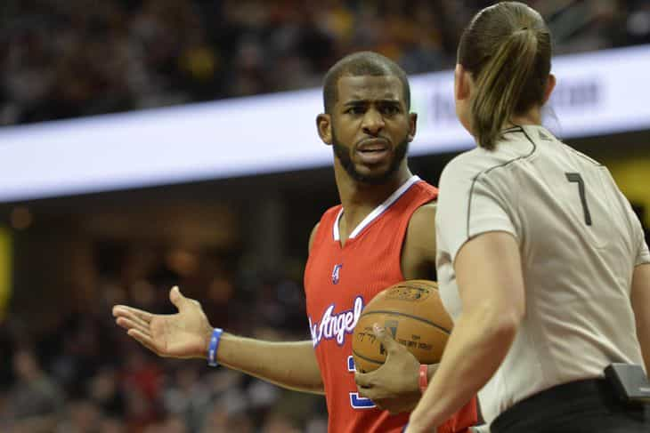

< < < Back
The NFL Continues Its White Knighting By Hiring A Female Referee – Return Of Kings
The National Football League recently helped women get a firmer grip on the scrotum of masculinity by hiring its first full-time female referee, Sarah Thomas.
Thomas, a married mother of three who hails from Mississippi, started officiating high school games in the mid 90s. She worked her way through the ranks and was eventually given a full schedule of games in the college ranks, which culminated in her being the first woman to officiate a bowl game at the end of the 2011 season.
The NFL announced her hiring on April 8th and the predictable narrative ensued. Sports pundits, male and female, have hailed the decision calling it groundbreaking, social progress, and the like. Thomas has made her rounds across media platforms and insists she doesn’t want to be a trailblazer.
Her thoughts about what she thinks she is or isn’t are inconsequential. What is consequential are the implications of this hire and what it means going forward. From what I’ve gathered so far men are falling into one of two camps on this: There are the “big deal, they hired a chick” and the “this is social change that is long overdue!” (read: white knights).
Then there’s a third section of men who happen to be in the minority on this—at least publicly. The men who know and understand that hiring a female referee is the continuation of the NFL’s consistent support of the feminine imperative at the expense of both the athlete and the male spectator.
Let’s take a look at the implications and subsequent consequences sure to follow with the hiring of Sarah Thomas.
Giving women power over men

Scenes like this soak the granny panties of feminists everywhere
Let’s face it. One of the main objectives of feminism is giving women power over men. The ability to exercise power over men in a male-dominated sector is something feminists have drooled over for decades. Thomas’s hire is the crack in the door they need to eventually realize this dream.
I recently wrote an article detailing the Chris Paul incident with female NBA referee Lauren Holtkamp. Holtkamp gave Paul a technical foul he disagreed with—something that happens nightly in the NBA with male referees. The difference here is that a woman had the ability and authority to dictate to and penalize a male and this is exactly what feminists want.
Women in the media and female sports fans won’t admit to this, but in an honest moment they’ll readily admit that seeing a woman calling a tech on an NBA player is something they relish. And now that Thomas has cracked the “glass ceiling” and is in the NFL, she and other women (who are sure to follow) will have the capacity to exert dominance over men in the most physically demanding, testosterone-driven sport in the world.
What’s her position?

Thomas’s position is a line judge. Though not as influential in terms of penalties called and overall gameplay, a line judge is an important position on the team of officials.
Basically a line judge’s responsibility is to monitor the line of scrimmage. Players jumping offsides, whether or not a pass is a backward lateral or forward pass, or various degrees of kicks during any given play are a few of the many responsibilities of an LJ.
One might think that a man or a woman could do this job equally well, but that is far from the truth. Being an official in the NFL is physically demanding. It requires physical speed, attention to detail, physical strength, and cat-like reflexes lest he (or she) be left in the dust.
Sarah Thomas has already addressed this as a possible “challenge” for her when she makes the jump to the next level:
The speed, yes, is there. These are just phenomenal athletes on both sides of the ball. The game has a tendency to slow down the (more) snaps you get and repetition. So, hopefully, the more snaps I get, things will start slowing down a little bit.
Hopefully??
This issue isn’t difficult to unpack. The bottom line is that men are physically superior to women in every way. This is why 99.9% of employees on oil rigs, sewers, warehouses, etc. are men. The same goes in the NFL or any other professional sports league. College is one thing, the NFL is quite another.
If Thomas fucks up on account of her lack of physical tools to be able to keep up with bigger, faster, and stronger players whilst having to make sure she’s also on her p’s and q’s she should be quickly demoted or fired.
But we all know that’s not going to happen because…
She will be above criticism
Dean Blandino, the VP of NFL officiating, can talk all he wants about the fact that Thomas will be judged and reprimanded just like her male counterparts but we know that’s not going to happen. The minute a player, coach, or even a colleague of hers so much as suggests that her job performance isn’t up to snuff you can best believe their words will be met with harsh criticism.
Don’t believe me? Ask Chris Paul.
Women want to be equal and do the things men do but they don’t want the responsibility or scrutiny that comes with it. But the PC police will ensure that anyone who points out Thomas’s mistakes or critiques her performance will be met with accusations of misogyny and everybody knows this.
For example, Danica Patrick hasn’t come close to winning a race on NASCAR’s top circuit but she’s managed to avoid criticism despite fucking a fellow driver, getting into an altercation with another over something stupid, and being flat out non-competitive in the 3+ years she’s been on the circuit.
A regular occurrence for the Go Daddy girl
But men won’t call her out because they would likely be suspended, fined, fired, or all three. Thomas says she doesn’t want her gender to matter but it will. The fact that she’s a female will make it nearly impossible to fire her unless there’s an egregious violation of some sort on her part, and even then she might remain employed.
Women will always trade on their beauty
What does Thomas have in common with other recent “trailblazers?”
Her looks.
Though the 41-year-old Thomas is well past the wall, it’s easy to see that she still retains some of the beauty she no doubt benefited from in her youth. Incidentally enough, her job before she became a full time referee was a pharmaceutical sales rep, which anyone with a pulse knows rewards women who have above average looks.
From Milka Duno and Michelle Wie, to Becky Hammon (who has become the first female coach in NBA history) and yes, Danica Patrick and most other women allowed to “play with the boys,” the common denominator is that they are good looking women. This is no accident.
This isn’t to say that their aesthetics alone got them to where they are today. Talent and ability definitely plays role in their success. But it would be disingenuous to suggest that their beauty didn’t grease the skids on their fast track to recognition.
Better looking girls have always lived better lives. Despite feminists’ efforts at social engineering, it will always be this way, and that’s perfectly okay. Crying their way into the boys’ club is no different because at the end of the day, feminists aren’t going to use trolls to infiltrate the almighty patriarchy (Billie Jean King notwithstanding) and neither are men.
Take Away
You can bet your bottom dollar that there are plenty of drivers who don’t race in NASCAR’s highest circuit who are 10 times the driver Danica Patrick will ever be. In the same vein I’m 100% certain there are scores of men who are more qualified than Thomas to do the job she’s been hired to do.
Similar to affirmative action this move by the NFL isn’t about meritocracy, it’s about political correctness and a poor attempt at establishing an unnecessary balance. Thomas will not the last female referee to be hired, and if this trend continues it won’t be long before players are suspended for “hurting the feeeewings” of a menstrual female referee who made a terrible call.
Read Next: The Chris Paul Story Shows That Women Shouldn’t Be Allowed To Officiate Male Sports